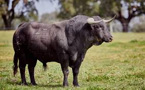
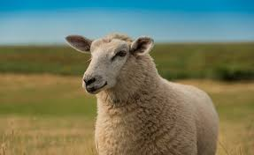
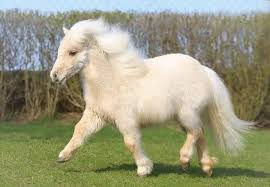
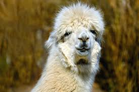
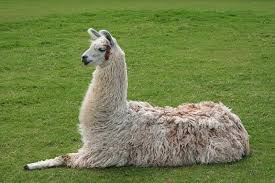
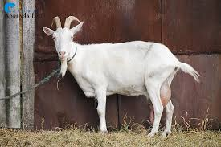
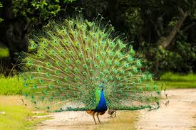
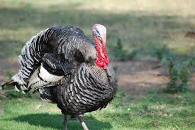

Vaca
Vacas criam laços fortes e costumam ficar perto das mesmas companheiras todos os dias.

Touro
Por mais que muitas pessoas ainda acreditem bois não odeia a cor vermelha, pois eles são daltônicos para essa cor, o que realmente irrita é o movimento do pano..

Ovelha
Ovelhas reconhecem rostos por anos, podendo lembrar de até 50 rostos de pessoas e de outras ovelhas.

Ponei
Podem não parecer mais eles conseguem puxar carga maiores que o próprio peso.

Alpaca
Elas quase não fazem barulho, se comunicam com um som suave (hummmm), muito fofo.

Lhama
São conhecidas por cuspir, mas usam isso como defesa ou demonstrar irritação, usam geralmente para outras lhamas e não para pessoas.

Cabra
São escaladoras profissionais, sobem em árvores, morros e até em paredes de barragens.

Pavão
eles tem "olhos" nas penas que acabam assustando predadores.

Peru
Só os machos fazem "glu glu glu", é para chamar atenção das fêmeas e avisar outros machos.